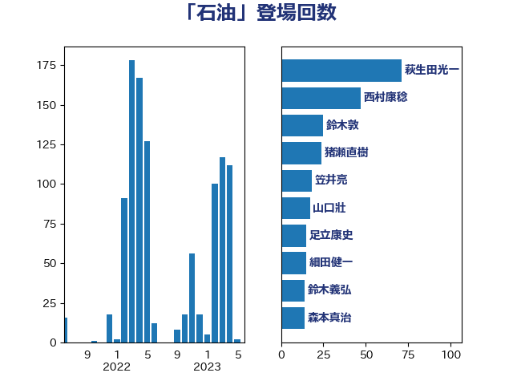

単語「石油」

| 萩生田光一 | 自由民主党 | 71 回 |
| 西村康稔 | 自由民主党 | 47 回 |
| 鈴木敦 | 国民民主党 | 25 回 |
| 猪瀬直樹 | 日本維新の会 | 24 回 |
| 笠井亮 | 日本共産党 | 18 回 |
| 山口壯 | 自由民主党 | 17 回 |
| 足立康史 | 日本維新の会 | 15 回 |
| 細田健一 | 自由民主党 | 15 回 |
| 鈴木義弘 | 国民民主党 | 14 回 |
| 森本真治 | 立憲民主党 | 14 回 |
| 阿達雅志 | 自由民主党 | 11 回 |
| 岸田文雄 | 自由民主党 | 11 回 |
| 河野義博 | 公明党 | 10 回 |
| 末松義規 | 立憲民主党 | 10 回 |
| 小野泰輔 | 日本維新の会 | 10 回 |
| 斉藤鉄夫 | 公明党 | 9 回 |
| 小林鷹之 | 自由民主党 | 9 回 |
| 櫻井周 | 立憲民主党 | 8 回 |
| 吉良州司 | 無所属 | 8 回 |
| 秋本真利 | 自由民主党 | 7 回 |
| 江田憲司 | 立憲民主党 | 7 回 |
| 林芳正 | 自由民主党 | 7 回 |
| 平山佐知子 | 無所属 | 7 回 |
| 岩渕友 | 日本共産党 | 7 回 |
| 山岡達丸 | 立憲民主党 | 7 回 |
| 竹詰仁 | 国民民主党 | 6 回 |
| 田島麻衣子 | 立憲民主党 | 6 回 |
| 里見隆治 | 公明党 | 5 回 |
| 玉木雄一郎 | 国民民主党 | 5 回 |
| 本庄知史 | 立憲民主党 | 5 回 |
| 小山展弘 | 立憲民主党 | 5 回 |
| 宮本徹 | 日本共産党 | 5 回 |
| 吉川ゆうみ | 自由民主党 | 5 回 |
| 鈴木俊一 | 自由民主党 | 4 回 |
| 金城泰邦 | 公明党 | 4 回 |
| 芳賀道也 | 国民民主党 | 4 回 |
| 石川博崇 | 公明党 | 4 回 |
| 石井苗子 | 日本維新の会 | 4 回 |
| 牧山ひろえ | 立憲民主党 | 4 回 |
| 清水貴之 | 日本維新の会 | 4 回 |
| 広瀬めぐみ | 自由民主党 | 4 回 |
| 平沼正二郎 | 自由民主党 | 4 回 |
| 山崎誠 | 立憲民主党 | 4 回 |
| 大串博志 | 立憲民主党 | 4 回 |
| こやり隆史 | 自由民主党 | 4 回 |
| 階猛 | 立憲民主党 | 3 回 |
| 道下大樹 | 立憲民主党 | 3 回 |
| 菅直人 | 立憲民主党 | 3 回 |
| 礒崎哲史 | 国民民主党 | 3 回 |
| 石原正敬 | 自由民主党 | 3 回 |
| 石井章 | 日本維新の会 | 3 回 |
| 田村まみ | 国民民主党 | 3 回 |
| 片山大介 | 日本維新の会 | 3 回 |
| 浜野喜史 | 国民民主党 | 3 回 |
| 梅谷守 | 立憲民主党 | 3 回 |
| 村田享子 | 立憲民主党 | 3 回 |
| 杉久武 | 公明党 | 3 回 |
| 川田龍平 | 立憲民主党 | 3 回 |
| 山本左近 | 自由民主党 | 3 回 |
| 山本太郎 | れいわ新選組 | 3 回 |
| 山本剛正 | 日本維新の会 | 3 回 |
| 大島敦 | 立憲民主党 | 3 回 |
| 城井崇 | 立憲民主党 | 3 回 |
| 中野英幸 | 自由民主党 | 3 回 |
| 高野光二郎 | 自由民主党 | 2 回 |
| 高良鉄美 | 無所属 | 2 回 |
| 馬場伸幸 | 日本維新の会 | 2 回 |
| 音喜多駿 | 日本維新の会 | 2 回 |
| 阿部司 | 日本維新の会 | 2 回 |
| 長友慎治 | 国民民主党 | 2 回 |
| 野田国義 | 立憲民主党 | 2 回 |
| 野田佳彦 | 立憲民主党 | 2 回 |
| 遠藤良太 | 日本維新の会 | 2 回 |
| 近藤昭一 | 立憲民主党 | 2 回 |
| 葉梨康弘 | 自由民主党 | 2 回 |
| 稲富修二 | 立憲民主党 | 2 回 |
| 福島伸享 | 無所属 | 2 回 |
| 神谷宗幣 | 参政党 | 2 回 |
| 石川香織 | 立憲民主党 | 2 回 |
| 石井正弘 | 自由民主党 | 2 回 |
| 猪口邦子 | 自由民主党 | 2 回 |
| 漆間譲司 | 日本維新の会 | 2 回 |
| 浜口誠 | 国民民主党 | 2 回 |
| 浅野哲 | 国民民主党 | 2 回 |
| 泉田裕彦 | 自由民主党 | 2 回 |
| 河西宏一 | 公明党 | 2 回 |
| 柿沢未途 | 無所属 | 2 回 |
| 松原仁 | 立憲民主党 | 2 回 |
| 新妻秀規 | 公明党 | 2 回 |
| 川合孝典 | 国民民主党 | 2 回 |
| 岸真紀子 | 立憲民主党 | 2 回 |
| 山添拓 | 日本共産党 | 2 回 |
| 山本順三 | 自由民主党 | 2 回 |
| 小田原潔 | 自由民主党 | 2 回 |
| 室井邦彦 | 日本維新の会 | 2 回 |
| 奥下剛光 | 日本維新の会 | 2 回 |
| 大塚耕平 | 国民民主党 | 2 回 |
| 古賀之士 | 立憲民主党 | 2 回 |
| 勝部賢志 | 立憲民主党 | 2 回 |
| 住吉寛紀 | 日本維新の会 | 2 回 |
| 井上哲士 | 日本共産党 | 2 回 |
| ながえ孝子 | 無所属 | 2 回 |
| おおつき紅葉 | 立憲民主党 | 2 回 |
| 高木かおり | 日本維新の会 | 1 回 |
| 青島健太 | 日本維新の会 | 1 回 |
| 青山大人 | 立憲民主党 | 1 回 |
| 長峯誠 | 自由民主党 | 1 回 |
| 鈴木宗男 | 日本維新の会 | 1 回 |
| 辻元清美 | 立憲民主党 | 1 回 |
| 足立敏之 | 自由民主党 | 1 回 |
| 谷合正明 | 公明党 | 1 回 |
| 西銘恒三郎 | 自由民主党 | 1 回 |
| 西田実仁 | 公明党 | 1 回 |
| 藤巻健太 | 日本維新の会 | 1 回 |
| 藤川政人 | 自由民主党 | 1 回 |
| 舩後靖彦 | れいわ新選組 | 1 回 |
| 自見はなこ | 自由民主党 | 1 回 |
| 篠原孝 | 立憲民主党 | 1 回 |
| 竹谷とし子 | 公明党 | 1 回 |
| 竹内真二 | 公明党 | 1 回 |
| 空本誠喜 | 日本維新の会 | 1 回 |
| 穂坂泰 | 自由民主党 | 1 回 |
| 稲津久 | 公明党 | 1 回 |
| 福重隆浩 | 公明党 | 1 回 |
| 福田昭夫 | 立憲民主党 | 1 回 |
| 福山哲郎 | 立憲民主党 | 1 回 |
| 石川昭政 | 自由民主党 | 1 回 |
| 石原宏高 | 自由民主党 | 1 回 |
| 石井浩郎 | 自由民主党 | 1 回 |
| 石井啓一 | 公明党 | 1 回 |
| 田村貴昭 | 日本共産党 | 1 回 |
| 田嶋要 | 立憲民主党 | 1 回 |
| 甘利明 | 自由民主党 | 1 回 |
| 玄葉光一郎 | 立憲民主党 | 1 回 |
| 牧野たかお | 自由民主党 | 1 回 |
| 片山さつき | 自由民主党 | 1 回 |
| 渡辺周 | 立憲民主党 | 1 回 |
| 浜田聡 | NHK党 | 1 回 |
| 浅田均 | 日本維新の会 | 1 回 |
| 沢田良 | 日本維新の会 | 1 回 |
| 池下卓 | 日本維新の会 | 1 回 |
| 水岡俊一 | 立憲民主党 | 1 回 |
| 武井俊輔 | 自由民主党 | 1 回 |
| 櫛渕万里 | れいわ新選組 | 1 回 |
| 梶山弘志 | 自由民主党 | 1 回 |
| 柴田巧 | 日本維新の会 | 1 回 |
| 松山政司 | 自由民主党 | 1 回 |
| 東徹 | 日本維新の会 | 1 回 |
| 杉本和巳 | 日本維新の会 | 1 回 |
| 末次精一 | 立憲民主党 | 1 回 |
| 末松信介 | 自由民主党 | 1 回 |
| 朝日健太郎 | 自由民主党 | 1 回 |
| 有村治子 | 自由民主党 | 1 回 |
| 斎藤アレックス | 国民民主党 | 1 回 |
| 庄子賢一 | 公明党 | 1 回 |
| 平林晃 | 公明党 | 1 回 |
| 平木大作 | 公明党 | 1 回 |
| 工藤彰三 | 自由民主党 | 1 回 |
| 島尻安伊子 | 自由民主党 | 1 回 |
| 山谷えり子 | 自由民主党 | 1 回 |
| 山田賢司 | 自由民主党 | 1 回 |
| 山田美樹 | 自由民主党 | 1 回 |
| 山本佐知子 | 自由民主党 | 1 回 |
| 小野田紀美 | 自由民主党 | 1 回 |
| 小西洋之 | 立憲民主党 | 1 回 |
| 小沢雅仁 | 立憲民主党 | 1 回 |
| 寺田静 | 無所属 | 1 回 |
| 宮沢洋一 | 自由民主党 | 1 回 |
| 太田房江 | 自由民主党 | 1 回 |
| 大野泰正 | 自由民主党 | 1 回 |
| 大野敬太郎 | 自由民主党 | 1 回 |
| 大岡敏孝 | 自由民主党 | 1 回 |
| 大家敏志 | 自由民主党 | 1 回 |
| 塩田博昭 | 公明党 | 1 回 |
| 塩川鉄也 | 日本共産党 | 1 回 |
| 堀井巌 | 自由民主党 | 1 回 |
| 吉良よし子 | 日本共産党 | 1 回 |
| 吉田宣弘 | 公明党 | 1 回 |
| 古賀友一郎 | 自由民主党 | 1 回 |
| 北村経夫 | 自由民主党 | 1 回 |
| 加田裕之 | 自由民主党 | 1 回 |
| 前原誠司 | 国民民主党 | 1 回 |
| 佐藤正久 | 自由民主党 | 1 回 |
| 伊藤渉 | 公明党 | 1 回 |
| 伊藤孝恵 | 国民民主党 | 1 回 |
| 伊東信久 | 日本維新の会 | 1 回 |
| 井林辰憲 | 自由民主党 | 1 回 |
| 中川康洋 | 公明党 | 1 回 |
| 中川宏昌 | 公明党 | 1 回 |
| 上田英俊 | 自由民主党 | 1 回 |
| 三浦信祐 | 公明党 | 1 回 |